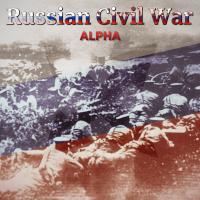

розпочато навесні 2021 р.
перекладено близько 95%
оновлено для гри версії 1.7.5
Посилання:

розпочато 24 липня 2024 р.
перекладено близько 45%
оновлено для гри версії 3.3.5.1
Посилання:

розпочато близько 8 липня 2023 р.
оновлено для моду версії 6.10.2017
Посилання:

розпочато 25 серпня 2024 р.
оновлено для моду версії 0.15.9.1
Посилання:

(демо-версія, ніде не доступна)